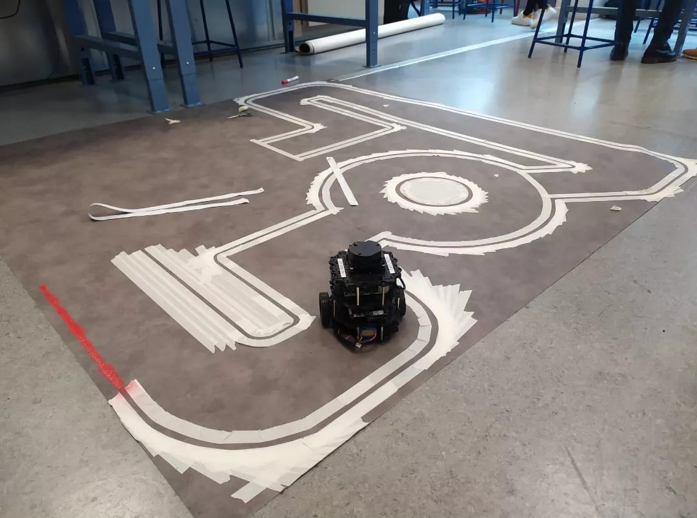

A student robotics competition held in Paris in 2022. The goal was simple on paper: get a robot to follow a track and deal with whatever obstacles got thrown in its way.
We started by building and testing everything in simulation, then ported it all to a real Turtlebot3 Burger for the actual run.
The Obstacles
The track had two visible lines the robot had to stay between. Drifting outside them meant losing points.
Tall columns were placed directly on the road. The robot had to detect them with LIDAR and navigate around without leaving the lane.
One of the harder sections was a completely dark room. No light, camera useless. The robot had to rely entirely on LIDAR to find the exit and keep moving.
Random blocks scattered in the middle of the track, placed at unpredictable positions to force real-time replanning.
1) Simulation with Gazebo and RViz
Set up the full navigation stack in ROS 2 and ran it in Gazebo using the exact same robot model and sensor setup as the physical one. Easier to break things there than in real life.
Used RViz to see what the robot was actually perceiving: sensor data, the planned path, where it thought obstacles were. Very useful for debugging.
The robot relied on both a camera for lane detection and a LIDAR for obstacle avoidance. Having both mattered especially for the dark room challenge.
2) Deploying on the Real Turtlebot3
Once simulation looked solid, we moved to the physical Turtlebot3 Burger. The gap between sim and real is always where things get interesting.
The same ROS 2 stack ran on the real robot without major changes. It handled the track, the obstacles, and the dark room on the actual competition day.

What I Did
Wrote the autonomous navigation stack in ROS 2 with Python, from lane following to obstacle avoidance.
Set up the Gazebo simulation and used RViz to debug sensor feedback and planned paths.
Combined camera and LIDAR data to handle both lit and dark environments.
Ported and tested the full system on the real Turtlebot3 Burger for competition day.